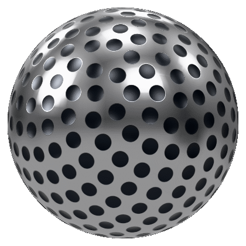
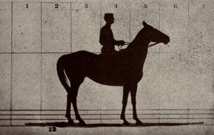

- Stand
- NO SURPRISES
- Stand user
- Ayaz Khan
Ability. Measures how surprised a model should be, in bits. When a calibrator claims more than the data allows, it shows.
Statistician and data scientist. I measure what a model can do before I believe what it reports.
Sallie Gardner at a gallop, traced from Muybridge's 1878 plate
Stage 115,000 Meters
Stage 2Across the Arizona Desert
Telenav, Santa Clara. Applied ML and Data Engineering Intern, June to August 2026.
I refused to ship a leaky 0.806 and reported the honest 0.7401.
On Novo Insurance's scoring stack. The 56.69% is a nonparametric estimate of the best accuracy any calibrator could reach on this data: 95% CI [55.13, 58.08] on 4,338 true-ping rows. The production calibrator ran 9 points below that bound. The finding cancelled a release that would have degraded pricing.
Target leakage and non-temporal splits had inflated the AUC to 0.806. With both fixed it was an honest 0.7401, and the audit surfaced $127K of campaign waste. Privileged-features distillation lifted ping-stage AUC from 0.6206 to 0.6457 on 23,559 holdout rows.
A 270M-parameter FunctionGemma router: 95.5% function accuracy and 86.4% exact match on 500 held-out prompts, 95.4% serving accuracy against live Snowflake.
Gyro's last lesson: “The shortest route was a detour.” In validation, the detour is a split by time. It is slower to build than a random split, and it is the one that shows how a model scores on rows that arrive after its training data.
In JoJo Part 4, an enemy offers to spare Rohan Kishibe if he lures Josuke into a trap. His answer: “But I refuse.”
Stage 3Rocky Mountain Breakdown
ACT 12024
15%
efficiency gain in 3D sensor networks, NSF REU; IEEE first author
ACT 22025
0.172%
of the data was fraud; Bayesian networks and calibrated XGBoost
ACT 32026
−3.8
points of affordability testimony in Con Edison rate cases
ACT 42025 to present
31.55%
fewer operations on average in Calx, exact on 45 of 45 cases
Johnny Joestar's Stand, Tusk, grows through four acts during the race, each built on the last. His goal is to bring his minus back to zero, which is also a fair description of bias correction.
NSF REU at Texas A&M University-Kingsville, June to August 2024. I built the Intrusion Effort Index on aperiodic Spectre monotile tilings for wireless sensor network security. It gave a 15% efficiency improvement in 3D deployments. First author, IEEE ICNGN 2024.
“Rare even among experienced researchers, his ability to close the distance between abstract theory and practical application is demonstrated by his development of the Intrusion Effort Index.”
Fraud was 0.172% of the data. I rebalanced the training data with SMOTE-NC, modeled fraud with Bayesian networks and calibrated XGBoost, and built a Dash app to monitor the model.
Columbia Data Science Institute scholar, NYSERDA energy-insecurity research, January to May 2026.
317 Con Edison testimony PDFs, 16 docket themes. Affordability testimony fell 3.8 points from 2022 to 2025.
The filings came from the New York Public Service Commission. I split them into 12,073 segments, 10,225 of them substantive, and modeled topics with BERTopic: LegalBERT embeddings, UMAP, then HDBSCAN. Over the same years, rate-design testimony rose 4.9 points and IT-systems testimony rose 3.4.
Founder and lead researcher, 2025 to present. Funny Valentine's D4C crosses between parallel worlds; Calx crosses between fields.
Calx is a neuro-symbolic engine for cross-domain discovery. It ports the Structure-Mapping Engine to find the same relational structure in problems from different fields. U.S. provisional patent application 64/029,090, filed through Columbia Technology Ventures.
| 31.55% | mean reduction in operations from the Certified Affine Corridor dynamic program, exact on 45 of 45 cases |
|---|---|
| 2 | new square-root Kalman filter variants |
| 594,000 | concepts across 11 ontologies in SMA-1, structure-mapping retrieval shipped as an MCP server |
| +0.34 | over the strongest RAG baseline on long-tail top-5 retrieval, medicine |
| +0.17 | on the same comparison, genomics |
Stage 4Little Tomb on the Wide, Wide Prairie
| Columbia University, M.A. Statistics | Dec 2026 |
| CUNY Hunter College, B.A. Statistics, cum laude | Dec 2024 |
| Provisional patent 64/029,090 | Columbia Technology Ventures |
| IEEE ICNGN 2024 | First author |
| National Science Foundation Graduate Research Fellow | 1 of 1,000 awardees from 17,000 applicants |
| Columbia University, M.A. Statistics | Expected December 2026 |
| CUNY Hunter College, Special Honors B.A. Statistics, computer science minor, cum laude | December 2024 |
| U.S. provisional patent application 64/029,090 | Through Columbia Technology Ventures |
| First author, IEEE ICNGN 2024 | Intrusion Effort Index for wireless sensor networks |
Stages 5 to 7Bonus stages
In JoJo many characters fight with a Stand, and most Stands are named after songs, albums or bands. Mine borrows Radiohead's “No Surprises”, and each grade links up to the result that earns it.
Ability. Measures how surprised a model should be, in bits. When a calibrator claims more than the data allows, it shows.
An interval says how far the estimate could move if the rows had come out differently. A bootstrap is one way to see that: resample the rows with replacement, recompute, and repeat a thousand times. Jotaro's Stand, Star Platinum, wins fights the same way, with a rush of punches (ORA ORA). Here each punch is one resample of simulated rows, a sketch of the idea that is separate from the analysis behind the Telenav interval.
The bootstrap rush needs JavaScript.
Gyro Zeppeli's Spin draws its power from the golden rectangle, sides in the ratio 1 to 1.618, and in Steel Ball Run he says a horse running at its natural pace forms one. Muybridge photographed a horse at a gallop in 1878, so I measured all eleven frames.
The frame-by-frame measurement needs JavaScript.
One more comparison, which I made after seeing the data, so treat it as a joke: Gyro also gives the ratio as roughly 9:16, and 16/9 is 1.78, inside the horse-alone interval [1.71, 1.90], so the horse passes his rough rule and fails his precise one.

Gyro's third lesson to Johnny is “Believe in the Spin.” This spin you can also measure. Drag or flick the ball: in this simulation, friction takes the same share of its speed every second, so the speed decays exponentially and its logarithm falls on a straight line. While the ball slows, the page fits that line by least squares and reports τ, the time constant of the decay. The fit runs live on the simulated readings.
Sallie Gardner at a gallop, Palo Alto, 19 June 1878. Traced from Eadweard Muybridge's plate.
Muybridge later projected painted copies of frames like these from a spinning glass disc, the zoopraxiscope, which he built in 1879. The frame under the pointer is the one on the screen.
In 1878 people argued over whether a galloping horse ever has all four hooves in the air. Muybridge stopped arguing and set up cameras along the track, 27 inches and about 1/25 of a second apart, each exposure shorter than 1/2000 of a second. Frames 2 and 3 settled it. I bring the same habit to models: set up the measurement first, then read what it says.
Stage 8Both Sides Now
Joseph Joestar's trick is telling an opponent “Your next line is...” before they say it, and D'Arby's Stand, Atum, reads a soul through yes-or-no questions. The box tries both on the questions recruiters ask.
The long answers: I'm a U.S. citizen, so I don't need sponsorship, now or later. My Columbia M.A. in Statistics finishes in December 2026, so I can start in January 2027. I'm in New York and willing to relocate. I'm looking for statistics and data science roles, especially biostatistics, model risk and analytics. The résumé is Ayaz_Khan_Resume.pdf.
Stage 9Manhattan Rhapsody
A finish-line camera watches one slit and records time instead of space. I ran the eleven traced frames past a single slit at 1/25 s per frame; each band is one exposure, and the legs smear wherever they outrun the body. The scale runs from 0 s at the right to 1.0 s at the left.
Hiring in biostatistics, model risk or analytics? I can start in January 2027.
